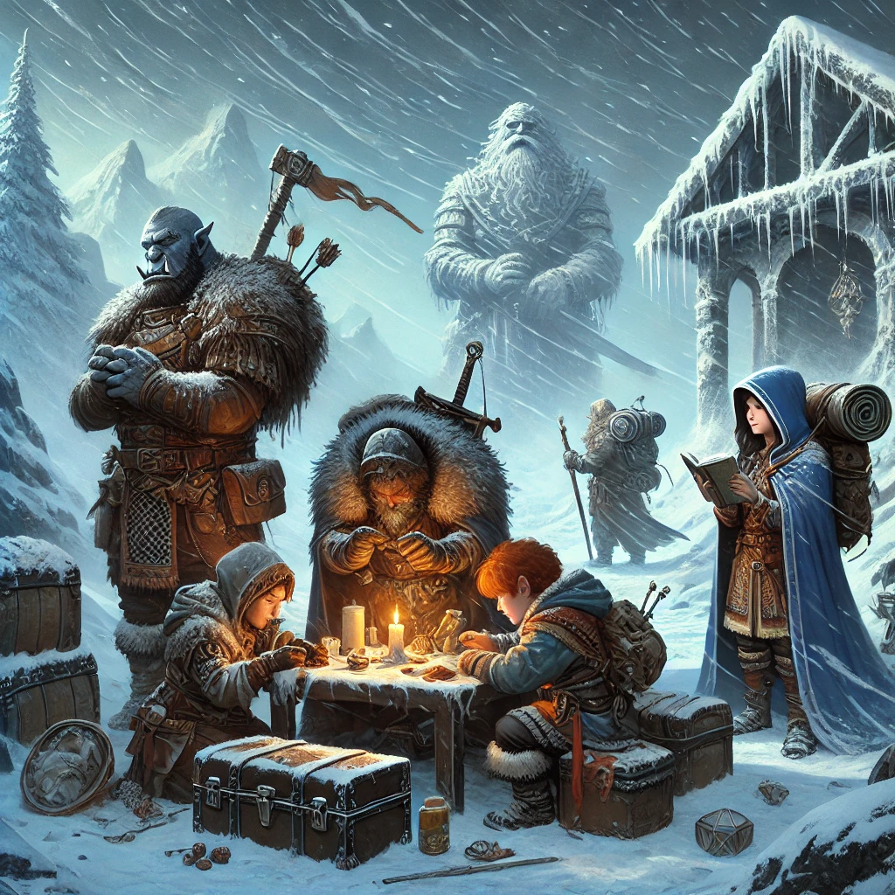

You had one in-game day to prepare for the pursuit of the horde. Your goal was to describe how your characters would spend this time. Focus on realistic actions that align with your characters’ abilities, personalities, and goals. You were allowed to work individually and/or collaboratively. Results:
Thunderdrum Stringcutter: 5
Thunderdrum’s focus on personal stealth and survival tools is minimal in terms of group utility. While his cold-resistant gear like the Ring of Warmth and Arctic Camouflage Cloak is appropriate, he fails to innovate or significantly contribute to team preparations. His entertainer background is underutilized, and he does little to alleviate the group's overall burden.
Deductions:
Terry Stronginthearm: 8
Terry’s divine efforts, such as cleansing the desecrated temple and preparing spells provide crucial support to the group. However, his reliance on uninterrupted magic makes his preparations vulnerable to anti-magic zones. Additionally, while his role as a spiritual and physical anchor is valuable, his lack of direct involvement in logistical or physical preparation leaves gaps.
Deductions:
Shrop Shireslasher: 9
Shrop takes the lead in the group’s logistical and research efforts, stepping up when others are overwhelmed. He secures resources such as cold-resistant gear and food supplies, gathers information on the pengu horde, and prepares contingency plans. His proactive approach significantly boosts the group’s readiness, showcasing a side of his character beyond brute strength. While his contributions are extensive, there is still room for innovation.
Deduction:
Grimbledee Brightburrow: 8
Grimbledee’s intellectual and arcane preparations remain strong, with tools like Tiny Hut and cold-resistant gear providing significant utility. However, his reliance on spells without clear contingencies for anti-magic scenarios and his limited emphasis on teamwork reduce his overall effectiveness. His actions, while practical, fail to capitalize on opportunities to enhance group cohesion.
Deductions:
Average Score: (5 + 8 + 9 + 8) ÷ 4 = 7.5, rounded up to 8 Blizzard Tokens.
Teamwork Bonus: None. While Shrop’s contributions alleviate some burdens, overall group collaboration and synergy are lacking.
Final Blizzard Tokens: 8
As the icy winds howl through Bryn Shander, the weight of preparation falls unevenly across the group. Thunderdrum’s focus on his personal survival leaves others to bear the brunt of logistical planning. Terry’s divine foresight offers stability but is heavily reliant on uninterrupted magic to succeed. In the face of this imbalance, Shrop shoulders much of the burden, gathering resources, researching the enemy, and ensuring the group is physically prepared for the trials ahead. Grimbledee’s arcane expertise bolsters the team’s survival, though his efforts lack the collaborative spark needed to truly unify the party.
Your preparations earn 8 Blizzard Tokens, a solid foundation but one marked by uneven contributions. As you step into the Blizzard Crawl, survival will demand greater cohesion and shared purpose. The frozen expanse ahead offers no forgiveness for disunity; adapt and strengthen your bonds, or risk the wrath of the storm.